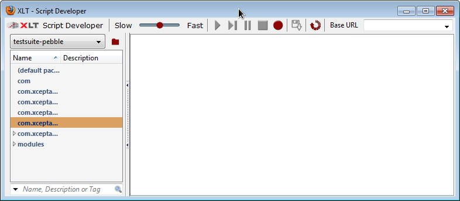
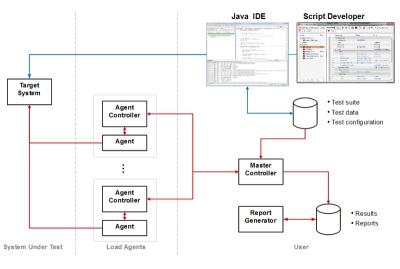

Introduction
About this document
This document concisely describes the use and most important features of the regression and load testing tool Xceptance LoadTest (XLT). To work effectively with XLT, a basic understanding of web technologies, Java, and the JUnit concept may be helpful.
What is XLT?
XLT is a tool that lets you easily develop and run both regression and load tests for web applications. Nearly every software providing access via HTTP/HTML can be tested; for the testing of applications using Web 2.0 technologies, XLT features extensive JavaScript support. Besides pure web testing, XLT offers SQL tests, RCP-based application tests, or any other test meant to run on platforms supporting Java.
XLT Script Developer
XLT Script Developer is a Firefox Add-on and a convenient user interface for the scripting and running of test cases and test suites. While you navigate through a website, it records the page flow and features a wide range of validations. For the programming of more complex test scenarios or validations serving your individual purposes, test cases can be exported to Java and edited in an IDE.
XLT Framework
Scripting test cases using Script Developer is easy but limited due to the strictly linear scripts and the fixed set of available commands.
The XLT framework provides various programming interfaces for writing individualized test cases in Java. Starting with Java code automatically generated from the test cases recorded with Script Developer, you can extend your test suite using the XLT API. It features the XLT Scripting API, a high-level command scripting API with a very intuitive syntax, the WebDriver API, and the lower-leveled XLT Action API based on HtmlUnit.
The XLT API translates all of your test scenarios into JUnit4 tests. The principles of JUnit4 and its annotations are used to implement and tag test cases. Thus, each XLT test is also a JUnit test allowing you to execute XLT tests just like any other test within a build process.
Installation Instructions
System Requirements
Hardware
- CPU at 1.5GHz or higher
- 1.0 GB RAM
- 1.0 GB available in the hard disk (default installation requires 85 MB but load test results might need additional capacity)
Software
- Operating System: Microsoft Windows, Linux, Oracle Solaris, HP-UX, or Mac OS X, that is any operating system for which a JVM 7 (or higher) is available.
- JVM: It’s recommended to use Oracle’s JVM. XLT also runs in JVMs provided by vendors like BEA, HP, or IBM, but this has not been tested extensively.
- Browser: Firefox, Chrome, Internet Explorer 8, or Safari 5 for the HTML load reports. Note that JavaScript has to be enabled to utilize all functionality. If you want to use XLT Script Developer, you need to have Firefox 17 (or higher).
Installing XLT
Unzip the XLT archive to a file system location of your choice. The root directory is part of the archive, so you don’t need to create it separately. XLT supports spaces in the path; however, it’s easier to code tests when the path is free of them.
Copy the license file to the directory <XLT>/config. Note that the Basic License doesn’t require the installation of a license file. It restricts the number of virtual users to five; yet there are neither temporal nor functional limitations. Also note that the Basic License Terms apply in that case. See
Make sure the executable directory of your Java installation is listed in your PATH environment variable so that the XLT start scripts can find the JVM runtime.
To install the XLT Script Developer Firefox extension, you need to:
- Start Firefox.
- Click File > Open File....
- Navigate to the
<XLT>/toolsdirectory and select the.xpifile. The Add-on installation dialog appears. - Click Install to finish.
Alternatively, drag the .xpi file and drop it onto the Firefox window.
Uninstalling XLT
Before uninstalling XLT, make sure to back up all test results and test reports you want to keep. To uninstall XLT, delete its installation directory. Use the Firefox Add-on dialog to remove the Script Developer Firefox extension.
XLT Script Developer
See the XLT User Manual for detailed information on XLT Script Developer.
Introduction
XLT Script Developer creates script test cases. These are based on a simple syntax and a reduced set of operations, which makes them a perfect fit for non-programmers. Besides Script Developer, no other tool is necessary to create, edit, and manage basic script test cases.
Script Developer is a recording tool. You simply use the application you want to test while your actions are being recorded and stored to an XML script file. During recording, you can add commands to perform validations on the page. Any recorded value can later be extracted out of the script into a test data file to separate test data from script code. Scripts may also be exported as ordinary Java code.
Script Developer lets you replay script files in Firefox at any time to check whether the test case is running successfully.
 XLT Script Developer
Basic Script Developer Settings
Before using Script Developer, make sure the Firefox extension is installed correctly. Open the Script Developer window via the Firefox Tools menu or, alternatively, by clicking the XLT icon in the status bar.
To set up Script Developer, go to Script Developer > Settings in the upper left of the Script Developer window. The configuration dialog opens.
- Java Code Settings
- Generate JUnit wrapper class for test cases: Activates the generation of JUnit wrapper classes needed to run recorded scripts in your Java IDE. Needs to be checked if you want to run load tests using recorded test cases or if you want to automate these tests, e.g. in a build process.
- Source Directory Name: Name of the directory where the generated Java source code is saved (src in most cases). The path is relative to the location of the current test suite.
- File Encoding: Character encoding scheme for JUnit wrapper classes. It should match the settings in your IDE when running test cases as JUnit tests.
- Recording Settings
- Element Identification Strategies: Check the boxes to select element identification strategies available during test case recording. Each web element type has a default identification strategy. If you haven’t checked it, one of the other identification strategies will be used to identify the element. For example, when you deselect the Name checkbox, the recorder will avoid command targets like name=xyz and the name attribute in XPath expressions. Note that XPath is used as a fall-back strategy and can’t be disabled.
- Attribute Filtering: Include Patterns and Exclude Patterns let you filter attributes used in element locators. If an Include Pattern is defined, only attributes matching this filter pattern are used in element locators and non-matching attributes will be avoided. On the other hand, an attribute will be avoided in element locators if it matches one of the Exclude Patterns. Exclude Patterns take precedence over Include Patterns , that is an attribute will be avoided if it matches the Exclude Pattern, even if it also matches any Include Pattern. Both pattern types are available for ID, Name, and Class attributes and must be given as regular expressions. More than one pattern can be defined, separated by whitespace.
- Replay settings
- Command Timeout (in sec.): Defines the default timeout for replaying
WaitForXyzcommands. When this time has elapsed and the condition is still false, the command will fail with an error message. This value might be changed for particular scripts by using thesetTimeoutcommand.
- Command Timeout (in sec.): Defines the default timeout for replaying
- Editor settings
- Display line numbers: If checked, line numbers are shown in front of a command when a test case or module is open for editing.
Getting Familiar With Script Developer
The Script Developer main window is made up of the project view and the work area.
On the left-hand side, the script explorer lists all available test cases and modules.
Right-click on the left-hand side to show the context menu and manage scripts and meta-data.
To edit the commands contained in a script, double-click the script to open it inside the script editor. Use the context menu to edit the command list.
Use the toolbar on top of the main window to record and replay scripts as you like.
Creating Test Scripts
Recording
Recording your interaction with the application you want to test is the easiest way to create test scripts:
- Open the web page you want to start with in a Firefox tab. Make sure this tab remains the foreground tab.
- Switch to Script Developer and create a new test case via the context menu in the script explorer. Provide a meaningful name. An empty script editor tab opens.
- Click Start Recording in the toolbar.
- Switch back to your web page and start using it. All your interactions with the page are being recorded.
- You may validate the correctness of pages by using assert commands:
- Open the Firefox context menu and select XLT Script Developer (available only during recording). A sub-menu opens.
- Choose any appropriate assertion from the sub-menu, such as:
- assertTextPresent - checks that the selected text appears on the page (select the respective text before)
- assertTitle - checks that the page title matches the current page title
- assertElementPresent - checks that an element is present on the page (open the Firefox context menu directly on the element in question)
- assertText - checks that an element is present on the page and that it has a certain text (select the respective text before)
- See the XLT User Manual for a full list of available assertions.
- Each assertion has a variant checking whether the respective condition is not true. You can record as many assertions as you like.
- When you’re done with your test scenario, switch back to Script Developer and click Stop.
- Save the script by clicking Save or using the Ctrl+S shortcut.
Script Developer inserts Actions while recording. An action is a sequence of steps belonging together, such as filling in the inputs of a form, submitting the form by clicking the submit button, and checking the resulting page with some assertions. Actions are primarily used to break the page flow down into reusable atomic steps and to give those steps a name. Action execution times are measured and reported while running load tests. Script Developer names actions generically. You may rename them to facilitate script maintenance.
Note that actions are not to be used to structure your code visually since they are not comments. Also keep in mind to give your actions a meaningful name (e.g. Search , Browse, or AddToCart).
Executing
As soon as you’ve completed your test case script, you can run it inside your browser.
- Open the script in a script tab or activate the tab if it is already open.
- Click Play in the toolbar.
While the script is running, you can watch the results of the script execution. Inside the browser tab, actions and validations the script is currently dealing with are highlighted yellow and orange, respectively. Inside the script tab, the commands are marked with a special status icon. It’s yellow as long as the command or module is being executed. When the execution is finished, the icon will either turn green in case of success or red in case of errors. Note that the script execution will immediately stop if a command fails.
You can adjust the replay speed to your personal needs using the speed slider control. Be aware though that the commands are not being executed any slower or faster this way. The slider only affects the amount of time elements are being highlighted.
The most commonly used toolbar controls and context menu options are:
- Stop - Terminates script execution
- Pause - Suspends script execution (after finishing the currently running command)
- Single step forward - Executes currently marked command and moves to next command
- Resume - Continues script execution
- Breakpoint - Automatically pauses script execution at a certain command. To set a breakpoint, select the respective command and press B or, alternatively, use the context menu or double-click the leftmost breakpoint column. A breakpoint marker appears.
- Start point - You can start script execution from any position. To set a start point, select the respective command and press S or, alternatively, choose Set Start Point from the context menu. A start point marker appears.
Editing
You can modify script test cases and modules almost any time. Often enough, it’s necessary to fix mistakes made during recording. For instance, you may have clicked a wrong link or forgotten to add an assertion. In the first case, just go back and continue your test scenario; the unwanted steps can be deleted later on. In the second case, manually add the appropriate assertion commands after you’ve finished recording. To modify a test case during recording, switch to the Script Developer window, make the necessary changes, and then return to the web page to continue recording.
Note that scripts are temporarily locked and not modifiable when being replayed.
The right-click context menu in the script explorer offers the following options for editing a test suite and scripts (test cases or modules):
- Insert new items
- Delete obsolete items
- Move items up and down in script (via Alt+Up and Alt+Down)
- Edit items
- En/Disable items
- Create a reusable module out of a sequence of items
To change the properties of a test script (e.g. its description), right-click the script in the library and choose Edit Details.
To make a call to an existing module, you just need to insert it into your test script. Put the cursor at the right position and choose Insert | Module from the context menu. A dialog pops up that lets you select the module to call and specify its parameter values. The module call is now part of your script and can be treated as any other command.
Performing Load Tests
See the XLT User Manual for detailed information on load tests.
To generate enough load, a distributed load generation environment made up of a cluster of test machines is required. Install XLT on all of these machines:
 Load generation environment
{kind=link}
- Master controller: Can be seen as the “brain” of the load test environment. Deploys the test suite to all load machines, evenly distributes the load, and starts/stops the load test. A test cluster may only have one master controller.
- Agent controller: Since the master controller doesn’t have direct access to the remote load machines, it needs the agent controller as counterpart on these machines. It acts on behalf of the master controller.
- Agent: Actually executes the test suite against the system under test. All agents are started and stopped by the agent controller.
Load Test Environment Configuration
Before you can start the load test, configure both the XLT load generation environment and your test suite as outlined below.
These property files are used to configure the main components of the XLT load generation runtime:
<XLT>/config/agentcontroller.properties- Agent Controller Configuration<XLT>/config/mastercontroller.properties- Master Controller Configuration
Agent Controller Configuration
Inside the agent controller configuration file, you can define these properties:
Port Number
Port number the agent controller is listening on. Default is 8500. You can pick any free port number, but make sure that the corresponding master controller entry matches that number. Also ensure that the firewall rules in place allow unrestricted communication. The used protocol is HTTPS. If you want to run more than one agent controller per machine, be aware that all controllers have to use different port numbers.
com.xceptance.xlt.agentcontroller.port = <portnumber>
Key Store Credentials
Credentials your key store is encrypted with. You only need to change this if your Java key store password has been modified from the default.
com.xceptance.xlt.agentcontroller.keystore.password = <password>
com.xceptance.xlt.agentcontroller.keystore.key.password = <password>
Agent Controller Logging
The properties below serve to configure the agent controller logging facility. They only affect the agent controller output and don’t alter the logging of your test code. Most of the time, a modification is not required here.
log4j.rootLogger = info, console, file
log4j.appender.console = org.apache.log4j.ConsoleAppender
log4j.appender.console.layout = org.apache.log4j.PatternLayout
log4j.appender.console.layout.ConversionPattern = [%d{HH:mm:ss,SSS}] %-5p [%t] - %m%n
Also see Apache Log4j API Docs for more information on log4j settings.
Master Controller Configuration
Inside the master controller configuration file, you can define these properties:
Test Suite Location
To determine the test suite you want to use for the load test, you need to specify its location either as absolute path or relative to your XLT installation. It is uploaded to the agent controllers from there.
com.xceptance.xlt.mastercontroller.testSuitePath = <location>
e.g. com.xceptance.xlt.mastercontroller.testSuitePath = samples/testsuite-posters
When running the load test on and from Windows, make sure to use the correct encoding for backslashes because the property file format uses backslashes to quote other special characters. Thus, quote the backslash with an additional backslash to ensure its original meaning, e.g.
c:\\test\\mysuite.
Update Interval
Defines how often the master controller prints the status of the currently running load test to the console:
com.xceptance.xlt.mastercontroller.ui.status.updateInterval = <time in seconds>
Status Display
Whether or not to display detailed status information for each simulated test user. If set to false, status information will be aggregated into one line per user type. If you have many test users running, it can be helpful to set this to false because you might get overwhelmed by the amount of information presented otherwise. Being a display property, it doesn’t change the data collection and final data presentation.
com.xceptance.xlt.mastercontroller.ui.status.detailedList = <true/false>
Agent Controller Locations
Lists the locations of the agent controllers you want the master controller to use:
com.xceptance.xlt.mastercontroller.agentcontrollers.<id>.url = <url>
com.xceptance.xlt.mastercontroller.agentcontrollers.<id>.weight = <weight>
You can use any name for the <id> part of the property. It’s recommended to resort to name and number combinations, such as ac1 for the first agent controller or blade01-02 for the second agent controller on the first blade. Make sure the agent controller IDs differ from each other, otherwise a later entry in the file will overwrite the previous one.
To simultaneously use load machines of different power in a load cluster, you can specify a “weight” for each agent controller (defaults to 1 if not set). This value influences the automatic distribution of virtual users across the load machines. A machine with a weight of 3 gets 3 times the load of a machine with a weight of 1.
com.xceptance.xlt.mastercontroller.agentcontrollers.ac1.url = https://localhost:8500
com.xceptance.xlt.mastercontroller.agentcontrollers.ac1.weight = 1
com.xceptance.xlt.mastercontroller.agentcontrollers.ac2.url = https://localhost:8501
com.xceptance.xlt.mastercontroller.agentcontrollers.ac2.weight = 3
Master Controller Logging
You can set a different logging behavior for the master controller, which helps to solve problems and provides information in case of support inquiries:
log4j.rootLogger = debug, file
log4j.appender.console = org.apache.log4j.ConsoleAppender
log4j.appender.console.layout = org.apache.log4j.PatternLayout
log4j.appender.console.layout.ConversionPattern = [%d{HH:mm:ss,SSS}] %-5p [%t] - %m%n
Test Suite Configuration
The test suite itself is configured independently from the master controller. All properties are read from the <test-suite>/config directory. See below for the settings relevant to load testing. See Test Suite and Framework Configuration in the XLT User Manual for details on all configuration files and properties.
Default Configuration – default.properties
Result directory location
Specifies the directory location where you want to store load test results. Normally, there’s no need to change it.
com.xceptance.xlt.result-dir = <directory path>
Error Behavior
Specifies the framework behavior in case of an error, that is whether or not the framework should abort a transaction if any of the following occurs:
- While loading a page – If an HTTP error occurred while loading a page.
- Page resource unavailable – If an HTTP error occurred while loading a resource embedded in a page.
- Java script error – If a JavaScript error occurred.
- Agent termination in case of server errors – Maximum number of errors allowed before an agent terminates, which helps to automatically stop unobserved, long-running test cases in the event of severe error conditions, such as unavailability of the system under test. The number of errors specified here is the error count per running agent controller.
com.xceptance.xlt.stopTestOnHttpErrors.page = <true/false>
com.xceptance.xlt.stopTestOnHttpErrors.embedded = <true/false>
com.xceptance.xlt.stopTestOnJavaScriptErrors = <true/false>
com.xceptance.xlt.maxErrors = <number of errors per agent controller>
Think Times
To specify the think time between two subsequent actions or transactions, use the properties below. If a random think time is needed, set the deviation to a value greater than 0. It specifies the maximum deviation from think time in milliseconds. The respective value is added to or subtracted from the think time using a pseudo-random, uniform distribution.
com.xceptance.xlt.thinktime.action = <time in [ms]>
com.xceptance.xlt.thinktime.action.deviation = <time in [ms]>
com.xceptance.xlt.thinktime.transaction = <time in [ms]>
com.xceptance.xlt.thinktime.transaction.deviation = <time in [ms]>
The think time configuration might look like this, for instance:
com.xceptance.xlt.thinktime.action = 100
com.xceptance.xlt.thinktime.action.deviation = 50
com.xceptance.xlt.thinktime.transaction = 0
com.xceptance.xlt.thinktime.transaction.deviation = 0
This sets the action think times between 50 and 150ms and no transaction think time whatsoever.
Note that the deviation has to be smaller than the specified base think time.
Test Project Configuration – project.properties
To configure your test project, edit the file project.properties.
Test Properties File
XLT permits to prepare and use multiple test.properties files for easy maintenance of test setups. This facilitates switching between test setups and prevents configuration errors. This property doesn’t allow the use of a path-specific file name. The test definition files reside in the same directory as the project.properties file.
com.xceptance.xlt.testPropertiesFile = <filename>.properties
Test Class Mapping
Specifies which test IDs should be used by XLT and, more specifically, which test ID uses which test case implementation. That’s why you have to specify the fully qualified class names of your tests here. Note that you can map the same class to multiple load test names if needed. This is extremely useful when you want to run the same test case in different configurations.
com.xceptance.xlt.loadtests.<name>.class = <fully qualified class name>
For example:
com.xceptance.xlt.loadtests.TVisitor.class = com.xceptance.xlt.samples.tests.TVisitor
com.xceptance.xlt.loadtests.TJSVisitor.class = com.xceptance.xlt.samples.tests.TJSVisitor
Test Class-Specific Settings
You can define project-wide settings that are test case-specific but not test run-specific by using the following syntax:
<fully qualified name>.<property-name> = <value>
For example:
com.xceptance.xlt.samples.tests.TAuthor.username = username
com.xceptance.xlt.samples.tests.TAuthor.password = password
com.xceptance.xlt.samples.tests.webdriver.TAuthor.write-count = 2
Load Test Profile Configuration – test.properties
Test-run-specific settings – You can also configure an (optional) property file which contains the settings specific to a certain load test run. You may define more than one test property file, such as test-target-load.properties and test-2x-target-load. This way, many configurations can be defined and prepared in advance and used as needed. You switch between these files by changing com.xceptance.xlt.testPropertiesFile in the project.properties file.
Load test profile configurations are done inside the test.properties file. Using the syntax below, you can define test ID, number of virtual users, and all other load test- specific settings of tests meant to run in parallel agents:
com.xceptance.xlt.loadtests.<testID>.<setting> = <value>
For <testID>, use any proper name. The following table lists all supported values for <setting>; required settings are displayed in bold face:
| Setting | Description |
|---|---|
| class | Fully qualified class name of the test case (REQUIRED if not specified in project.properties) |
| users | Number of threads that run the test in parallel (REQUIRED), may be a load function |
| iterations | Number of iterations per thread |
| arrivalRate | Number of transactions per hour, may be a load function |
| initialDelay | Number of seconds to wait at the beginning |
| warmUpPeriod | Number of seconds to run without performing measurements |
| measurementPeriod | Number of seconds to perform measurements (REQUIRED) |
| shutdownPeriod | Number of seconds to continue without performing measurements |
| rampUpPeriod | Number of seconds to steadily increase the user count |
| rampUpStepSize | Number of users to stepwise increase the load during ramp-up |
| rampUpSteadyPeriod | Number of seconds between ramp-up steps |
| rampUpInitialValue | Number of users when starting ramp-up |
It is strongly recommended to see Load and Performance Testing in the XLT User Manual for detailed explanations of load models, load profiles, and load test phases.
A sample load profile configuration is given below:
com.xceptance.xlt.loadtests = TAuthor
com.xceptance.xlt.loadtests.TAuthor.users = 5
com.xceptance.xlt.loadtests.TAuthor.iterations = 100
com.xceptance.xlt.loadtests.TAuthor.arrivalRate = 3600
com.xceptance.xlt.loadtests.TAuthor.initialDelay = 0
com.xceptance.xlt.loadtests.TAuthor.warmUpPeriod = 30s
com.xceptance.xlt.loadtests.TAuthor.measurementPeriod = 10m 0s
All time period values can be specified in one of the following formats (without quotes):
- total number of seconds: ‘1234s’ or '1234'
- natural style: ‘0h 12m 0s’, ‘0h 12m’, ‘12m 0s’, or '12m'
- digit style: ‘1:23’, ‘01:23’, ‘0:1:23’, or ‘0:01:23’
If you want to run several test cases simultaneously, specify the test case names as value for the property com.xceptance.xlt.loadtests in form of a space-separated list:
com.xceptance.xlt.loadtests = TAuthor TVisitor TCrawler
com.xceptance.xlt.loadtests.TAuthor.users = 5
com.xceptance.xlt.loadtests.TVisitor.users = 3
com.xceptance.xlt.loadtests.TCrawler.users = 4
Other Settings
In case you want to modify the behavior of the logging facility of the load test agents, the test suite configuration directory contains a file named log4j.properties that can be changed to satisfy your needs.
To launch the JVM that runs the agent with additional parameters, specify them in the jvmargs.cfg file.
Run the Load Test
Running the load test consists of two steps:
- running the agent controllers, and
- running the master controller.
Running the Agent Controllers
To start the agent controllers, open a command line window/console and type the following sequence of commands:
cd <XLT>/bin
./agentcontroller.sh
Windows users have to use the appropriate
.cmdfile located in the same directory.
The agent controller starts up and listens on the specified port. The output looks like this:
- Using "C:\Users\AppData\Local\Temp\vfs_cache" as temporary files store.
- Logging to org.slf4j.impl.Log4jLoggerAdapter(org.mortbay.log) via org.mortbay.log.Slf4jLog
- jetty-6.1.19
- Started SslSocketConnector@0.0.0.0:8500
Running the Master Controller
Before starting the master controller, make sure all agent controllers are running on all respective load test machines. The master controller cannot be started if the agent controllers aren’t running. Also check that the test suite has been compiled successfully to avoid errors when uploading it.
You can start the master controller in different modes (see the XLT User Manual for details). Recommended mode for beginners is auto.
Auto Mode
Automatically runs a typical sequence of steps to be executed when running a load test without any user interaction. To start XLT in this mode, use the following command line:
Unix-based systems:
cd <XLT>/bin
./mastercontroller.sh -auto
Windows:
cd <XLT>\bin
mastercontroller.cmd -auto
If the test suite files were uploaded and the load agents started successfully, XLT automatically refreshes the agent status on a regular basis. As soon as the test has finished, the test results are downloaded and XLT master controller quits.
If the command is followed by the option -report , a load test and performance report will be automatically generated after the test has finished and the results have been downloaded.
cd <XLT>\bin
mastercontroller.cmd -auto -report
To abort the test prematurely, press CTRL-C to terminate the master controller. This terminates all running agents as well and triggers the download of all test results generated so far. Note that it’s therefore impossible to disconnect the master controller from the test cluster while keeping the load test running.
For long-running load tests, it is recommended to run the test without the
-autooption because this allows a disconnect from the test and inhibits accidental test termination.
Acknowledgments
- This product includes software developed by Andy Clark.
- This product includes software developed by The Apache Software Foundation.
- This product includes software developed by Caucho Technology.
- This product includes software developed by Gargoyle Software Inc..
- This product includes software developed by Harald Kirschner.
- This product includes software developed by The jQuery Team under MIT license.
- This product includes software developed by Alex Gorbatchev.
- This webpage features prettyPhoto by Stephane Caron 2008 published under CC-BY-2.5.
Copyright © 2014 by Xceptance Software Technologies. All rights reserved.